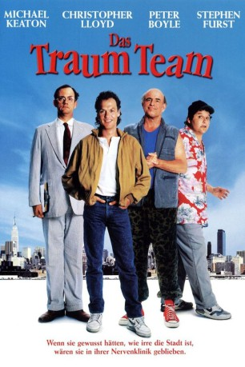

#7799 Das Traum-Team
Alternativ: The Dream Team
 
 IMDB-Wertung: 6.5 / 10
IMDB-Wertung: 6.5 / 10  Metascore: 0
Metascore: 0 
Vier Psychiatrie-Patienten machen mit ihrem Therapeuten einen Tagestrip nach New York. Eigentlich wollten sie sich dort ein Baseballspiel ansehen, doch zufällig werden sie Zeugen eines Verbrechens. Plötzlich sehen die vier Sonderlinge in der misslichen Lage ihren schwer verletzten Therapeuten retten zu müssen, die Verbrecher zu überführen und sich ohne fremde Hilfe der pulsierenden Metropole zurechtzukommen. Und dafür müssen sich die vier höchst unterschiedlichen Persönlichkeiten zusammenraufen. So bilden der aggressive Billy, der pedantische Henry, Jack, der sich selbst für Christus hält, und der gehemmte Albert ein irres Traum Team, das diese Schwierigkeiten mit Wahn-Witz und Erfindungsreichtum löst!
Jahr: 1989
Dauer: 112 Minuten
FSK: 12
Land: USA Studio: Universal PicturesTonspuren:
Untertitel: Deutsch,
Auflösung: 1080p (1920x1040) Größe: 7147 MB
Genre: Thriller, Komödie, Krimi
Regisseur: Howard Zieff
Drehbuch: Jon Connolly
Soundtrack: David McHugh
Darsteller:
 Michael Keaton als Billy Caufield
Michael Keaton als Billy Caufield Christopher Lloyd als Henry Sikorsky
Christopher Lloyd als Henry Sikorsky Peter Boyle als Jack McDermott
Peter Boyle als Jack McDermott- Stephen Furst als Albert Ianuzzi
 Dennis Boutsikaris als Dr. Weitzman
Dennis Boutsikaris als Dr. Weitzman Lorraine Bracco als Riley
Lorraine Bracco als Riley- Milo O'Shea als Dr. Newald
 Philip Bosco als O'Malley
Philip Bosco als O'Malley James Remar als Gianelli
James Remar als Gianelli Brad Sullivan als Sgt. Vincente
Brad Sullivan als Sgt. Vincente Larry Pine als Canning
Larry Pine als Canning- Tico Wells als Station Attendant
 Barry Flatman als Arrogant Yuppie
Barry Flatman als Arrogant Yuppie- Bruce Hunter als Yuppie
- Lizbeth MacKay als Henry's Wife
- Olivia Horton als Henry's Daughter
- Freda Foh Shen als TV Newscaster
 Donna Hanover als Field Reporter
Donna Hanover als Field Reporter- Michael Copeman als Con Ed Man
- Shel Goldstein als Waitress
 Jane Luk als Admissions Nurse
Jane Luk als Admissions Nurse- John Liddle als Cop
- Michael Lembeck als Ed
- John Hayden als Cop (uncredited)
- Bill Goffi als Singer / Accordionist
- Jack Duffy als Bernie
- Harold Surratt als Pastor Lester
- Kenneth Raybourne als Gospel Musician
- Alphonsus E. Platt als Gospel Musician
- Robert Weil als Caesar
- Janet Feindel als Senior Nurse
- Ted Simonett als Yuppie
- John Stocker als Murray
 Richard Fitzpatrick als Dr. Bauer
Richard Fitzpatrick als Dr. Bauer- Jack Jessop als Dr. Meekum
- Ron James als Dwight
- Dennis Parlato als TV Newscaster
- Greg Beresford als Field Reporter
- Wayne Tippit als Captain Lewitt
- Eric Fink als Priest
- A. Frank Ruffo als Relative
- Victor Ertmanis als Man in Mets Jersey
- Cynthia Belliveau als Nurse
- Stewart Bick als Paramedic
- James O'Regan als Litterbug
- Dick Callahan als Bartender
- Jihmi Kennedy als Tow Man
- Marty Waldman als Salesman
- Michelyn Emelle als Duty Nurse Harriet
- Michael Beatty als Intern
Datei: X:\1989\Traum-Team, Das (1989, FSK12, 1920x1040).mkv seit 20.12.2017
Festplatte: HD 1987-1991
 Es gibt insgesamt 54 Filme in der Gruppe '1989'
Es gibt insgesamt 54 Filme in der Gruppe '1989'